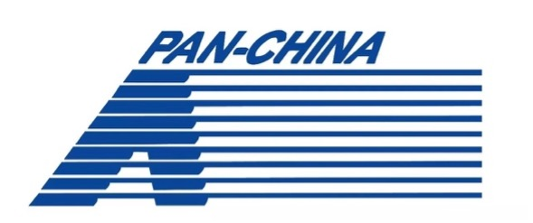

EDUCATION
DUKE UNIVERSITY, THE FUQUA SCHOOL OF BUSINESS
Master of Science in Quantitative Management: Business Analytics, Risk Track (STEM)
July 2023 – May 2024
GPA 3.85
Data Science Coursework: Data Infrastructure (SQL), Data Science for Business (Machine Learning), Data Visualization (Tableau), Decision Analytics & Modeling, Applied Probability and Statistics
Domain Coursework: Managing Operational and Informational Risks, Fraud Analytics, Managing Cybersecurity Risk

CHINESE UNIVERSITY OF HONG KONG, SCHOOL OF MANAGEMENT AND ECONOMICS
Bachelor of Business Administration, Finance
September 2019 – May 2023
GPA 3.6
Dean’s List, Student Ambassador of Admission Consulting Service Group
Selected Coursework: Data Analytics, Advanced Statistical Computing, IT in Business Applications, Investment Analysis Shenzhen, China
EXPERIENCE
JD TECHNOLOGY, Financial Technology Department
Financial Product Risk Analytics Intern
•Strategized operation of financial product “JD Baitiao,” with ~100K monthly active users, conducting risk assessment based on customers' credit histories and trading volume with MySQL.
•Refined decision tree model for risk assessment, identifying new effective variables with R, improving model test accuracy by 1.5%, set for official deployment after evaluation.
•Conducted and delivered weekly dynamic performance reports on customer segmentation, operational strategies, and suggestions for product development, contributing to 95% year-on-year increase in market penetration rate during anniversary promotion.

PAN-CHINA CERTIFIED PUBLIC ACCOUNTANTS, Audit Department
Audit Analyst
•Engaged in five annual audit projects, formulating audit documentation for several subjects including account receivable and account payable using Microsoft Excel.
•Analyzed and proofread company financial statements including bank deposits, sales expenses, and internal and external revenues; investigated suspicious transactions in company financial records based on risk models, including anomaly detection and internal control assessment.
•Conducted due diligence for an IPO project through onsite investigation.
NEW ORIENTAL EDUCATION & TECHNOLOGY GROUP
Teaching Assistant
•Collaborated with teachers to prepare learning materials and track student performance.Hangzhou, China